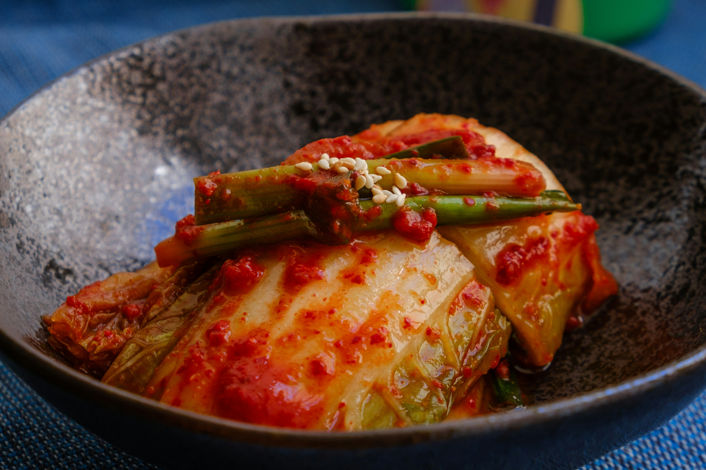

Kimchi & How to make it
Home

Kimchi Recipe
Kimchi is a traditional Korean side dish (banchan) consisting of salted and fermented vegetables,
most often napa cabbage or Korean radish. A wide selection of seasonings are used, including gochugaru
(Korean chili powder), spring onions, garlic, ginger, and jeotgal (salted seafood).
Kimchi is also used in a variety of soups and stews. Kimchi is a staple food in Korean cuisine
and is eaten as a side dish with almost every Korean meal. This recipe starts with two heads of napa cabbage.
Rubbing the cabbage with coarse sea salt draws out the excess moisture, extends the shelf life, and adds flavor.
Kimchi's flavor and intensity can vary based on the ingredients used,
but it should be some combination of sour, salty, and spicy.
What you need
- 2 heads napa cabbage
- 1 ¼ cups coarse sea salt
- 1 tablespoon fish sauce
- 5 green onions, chopped
- ½ small white onion, minced
- 2 cloves garlic, pressed
- 2 tablespoons white sugar
- 1 teaspoon ground ginger
- 5 tablespoons gochugaru (Korean chili powder)
How to do
- Cut cabbages in half lengthwise and trim the ends. Rinse and cut into pieces about 2 inch square. Place cabbage into large resealable bags; sprinkle salt evenly over leaves to coat. Use your hands to rub salt into cabbage. Seal the bags and leave at room temperature for 6 hours.
- Rinse cabbage leaves under cold water, at least 2 to 3 times, to remove most of the salt; drain and squeeze out any excess liquid.
- Place rinsed cabbage in a large container with a tight fitting lid. Stir in fish sauce, green onions, white onion, garlic, sugar, and ginger. Sprinkle Korean chile powder over mixture.; wear plastic gloves to protect your hands and rub chile powder into cabbage leaves until evenly coated.
- Seal the container and set in a cool dry place. Leave undisturbed for 4 days. Refrigerate before serving, and store in the refrigerator for up to 1 month (if it lasts that long!).